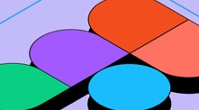

Створюю адаптивні сайти з нуля для різних розмірів екранів.
Використовую Flexbox, Grid, медіа-запити, анімації, кастомні шрифти.
Оформлюю в єдиному фірмовому стилі.
Використовую Flexbox, Grid, медіа-запити, анімації, кастомні шрифти.
Оформлюю в єдиному фірмовому стилі.
Використовую Python для автоматизації задач і аналізу даних.
Створював скрипти, що працюють зі структурами даних, файлівим
введенням/виведенням, логікою прийняття рішень.
Створював скрипти, що працюють зі структурами даних, файлівим
введенням/виведенням, логікою прийняття рішень.
Розробив симуляції (моделі поширення інфекції,
цифрові пристрої), однозв’язні та двозв’язні списки,
працював з масивами, структурами та STL без використання сторонніх бібліотек.
цифрові пристрої), однозв’язні та двозв’язні списки,
працював з масивами, структурами та STL без використання сторонніх бібліотек.

Розробляю повні дизайн-системи: від кольорової палітри та шрифтів
до прототипів головної і другорядних сторінок. Дотримуюсь адаптивності
й UX-принципів.
до прототипів головної і другорядних сторінок. Дотримуюсь адаптивності
й UX-принципів.